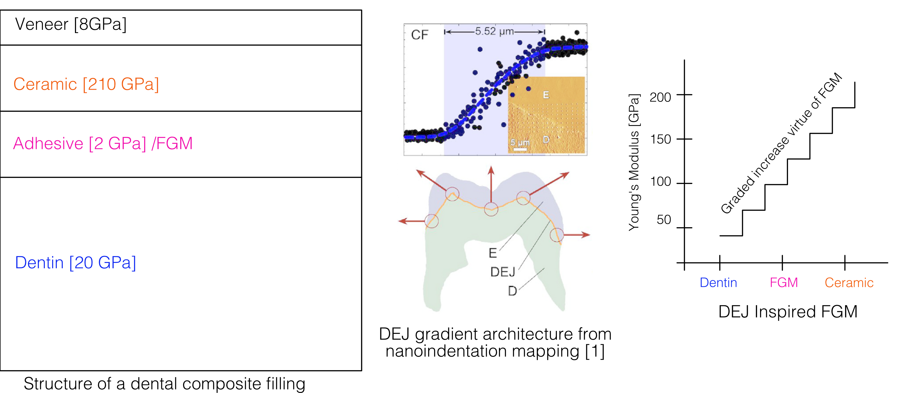

Bio-Inspired Functionally Graded Materials in Dental Composites

On average, adults develop three to four cavities throughout their lifetime, with some individuals experiencing more than ten cavities [2]. A common restoration technique is to use fillings to replace a small portion of the tooth structure. Two common filling approaches include amalgam fillings and composite fillings. Amalgam fillings consist of a mixture of metals, including mercury, silver, tin, and copper [3]. They are known for their durability and strength. Composite fillings, on the other hand, are made of a resin-based material that can be color-matched to the natural tooth.
The Minamata Convention, an international treaty signed in 2013, aims to reduce the use of mercury due to its harmful effects on human health and the environment. As a result, there has been a shift towards using composite fillings instead of amalgam fillings. However, composite fillings have a higher failure rate compared to amalgam fillings, with studies showing that they are more likely to fracture or wear down over time [4]. This has led to a need for improved composite fillings that can provide better durability and longevity.
By mimicking the natural structure of teeth, in particular, the dentino-enamel junction (DEJ), we can potentially improve the performance of composite fillings. The DEJ is a transition interface between the enamel and dentin layers of a tooth, characterized by a gradual transition in material properties [5]. This gradation in properties helps to distribute stresses more evenly across the tooth structure, reducing the likelihood of failure.
To mimic the DEJ, this research develops a finite element model to study the behavior of functionally graded materials (FGMs) in Abaqus to investigate the effect of different gradation profiles on the stress distribution and failure behavior of composite fillings. The study considers various gradation profiles, such as linear, exponential, sigmoidal, parabolic, and logarithmic, to determine which profile provides the best performance in terms of reducing stress concentrations and improving durability. The results of this study can provide insights into the design of bio-inspired composite fillings that can better withstand the mechanical stresses experienced in the oral environment.
The broader implications of this research extend beyond dental applications. The principles of bio-inspired design and functionally graded materials can be applied to a wide range of engineering problems, including aerospace, automotive, and biomedical applications. By learning from nature's designs, we can develop innovative materials and structures that are more efficient, durable, and sustainable.
References
- https://www.sciencedirect.com/science/article/pii/S0109564117305584
- https://www.advanceddentalgermantown.com/how-many-cavities-are-normal-for-every-age-group/
- https://www.fda.gov/medical-devices/dental-devices/dental-amalgam-fillings
- https://minamataconvention.org/en/about
- https://www.sciencedirect.com/science/article/abs/pii/S0109564117305584